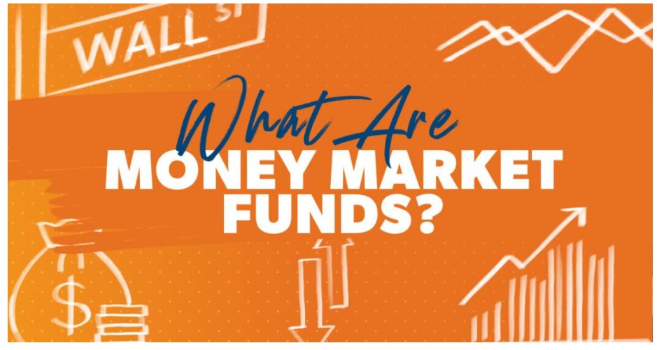

Investment Options
Money Market Fund (MMF)
- A money market fund is a type of mutual fund that invests in high-quality, short-term debt securities, cash, and cash equivalents
- MMFs are considered low risk.
- Designed for liquidity and stability, often used for short-term savings or emergency funds
- Generate modest income through interest, sensitive to interest rate changes.
Treasury Bills

- Treasury Bills are paperless short-term borrowing instruments issued by the Government through the Central Bank of Kenya to raise money for up to 1 year.
- They are issued in maturities of 91, 182, and 364 days.
- Sold at a discounted price and redeemed at face value, providing a fixed return to investors.
- The minimum investment amount is Kshs. 100,000, with additional amounts in multiples of Kshs. 50,000.
- Anyone with a Central Depository System (CDS) account can invest. Non-Kenyan investors not domiciled in Kenya must invest through a local bank nominee.
Treasury Bonds
- Treasury bonds are medium- to long-term debt securities issued by the government to raise funds for various projects and expenses
- They have maturity periods ranging from 2 to 30 years.
- Most bonds offer fixed interest rates with semi-annual payments throughout the bond's maturity.
- They are considered secure investments as they are backed by the government
- The minimum investment is KES 50,000, and investors need a Central Depository System (CDS) account.
- Bonds are auctioned monthly by the Central Bank of Kenya.
REITs

- REITs offer an indirect way to invest in income-generating real estate.
- REITs operate as collective investment schemes where investors buy units traded on the Nairobi Securities Exchange (NSE), providing liquidity and easy entry/exit.
- REITs enjoy tax exemptions on corporate tax, with only distributions to unitholders being taxed.
- There are only a few authorized REITs in Kenya, including the ILAM Fahari I-REIT, which is Shari'ah compliant.
SACCOs

- SACCOs offer competitive financial services, including higher interest rates on savings and easier access to loans compared to traditional banks
- SACCOs play a crucial role in Kenya's housing sector, with estimates suggesting they provide up to 90% of the country's housing finance
- Each SACCO has its own membership requirements, such as a one-time membership fee or a minimum initial deposit.
- SACCOs operate on the principle of cooperation, with members playing an active role in decision-making processes.